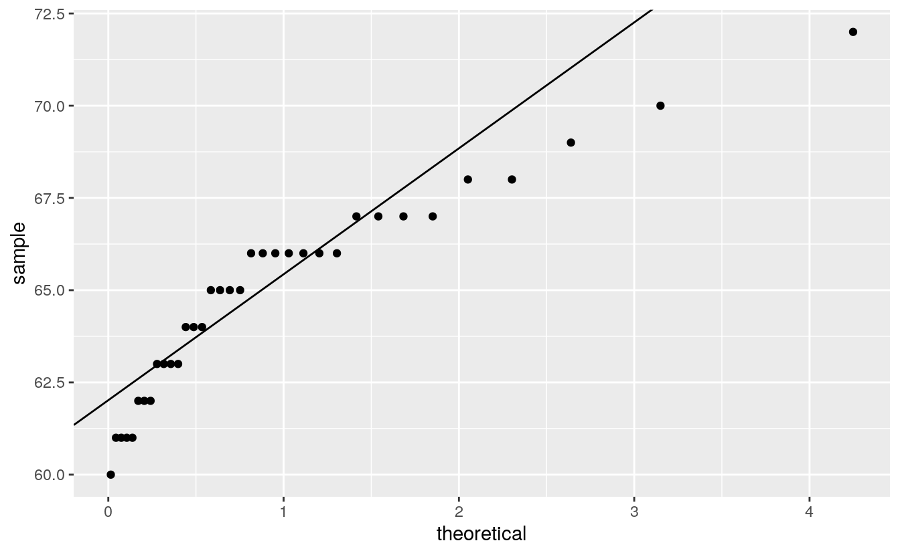

B Q-Q normal to compare data to distributions
B.1 Introduction
https://mgimond.github.io/ES218/Week06a.html
Thus far, we have used the quantile-quantile plots to compare the distributions between two empirical (i.e. observational) datasets. This is sometimes referred to as an empirical Q-Q plot. We can also use the q-q plot to compare an empirical observation to a theoretical observation (i.e. one defined mathematically). Such a plot is usually referred to as a theoretical Q-Q plot. Examples of popular theoretical observations are the normal distribution (aka the Gaussian distribution), the chi-square distribution, and the exponential distribution just to name a few.
B.2 Why we want to compare emprirical vs theoretical distributions
There are many reasons we might want to compare empirical data to theoretical distributions:
A theoretical distribution is easy to parameterize. For example, if the shape of the distribution of a batch of numbers can be approximated by a normal distribution we can reduce the complexity of our data to just two values: the mean and the standard deviation.
If data can be approximated by certain theoretical distributions, then many mainstream statistical procedures can be applied to the data.
In inferential statistics, knowing that a sample was derived from a population whose distribution follows a theoretical distribution allows us to derive certain properties of the population from the sample. For example, if we know that a sample comes from a normally distributed population, we can define confidence intervals for the sample mean using a t-distribution.
Modeling the distribution of the observed data can provide insight into the underlying process that generated the data.
But very few empirical datasets follow any theoretical distributions exactly. So the questions usually ends up being “how well does theoretical distribution X fit my data?”
The theoretical quantile-quantile plot is a tool to explore how a batch of numbers deviates from a theoretical distribution and to visually assess whether the difference is significant for the purpose of the analysis. In the following examples, we will compare empirical data to the normal distribution using the normal quantile-quantile plot.
B.3 The normal q-q plot
The normal q-q plot is just a special case of the empirical q-q plot we’ve explored so far; the difference being that we assign the normal distribution quantiles to the x-axis.
B.3.1 Drawing a normal q-q plot from scratch
In the following example, we’ll compare the Alto 1 group to a normal distribution. First, we’ll extract the Alto 1 height values and save them as an atomic vector object using dplyr’s piping operations.
However, dplyr’s operations will return a dataframe–even if a single column is selected. To force the output to an atomic vector, we’ll pipe the subset to pull(height) which will extract the height column into a plain vector element.
library(dplyr)
#>
#> Attaching package: 'dplyr'
#> The following object is masked from 'package:gridExtra':
#>
#> combine
#> The following objects are masked from 'package:stats':
#>
#> filter, lag
#> The following objects are masked from 'package:base':
#>
#> intersect, setdiff, setequal, union
df <- lattice::singer
alto <- df %>%
filter(voice.part == "Alto 1") %>%
arrange(height) %>%
pull(height) %>%
print
#> [1] 60 61 61 61 61 62 62 62 63 63 63 63 64 64 64 65 65 65 65 66 66 66 66 66 66
#> [26] 66 67 67 67 67 68 68 69 70 72Next, we need to find the matching normal distribution quantiles. We first find the f-values for alto, then use qnorm to find the matching normal distribution values from those same f-values
i <- 1:length(alto)
fi <- (i - 0.5) / length(alto)
fi
#> [1] 0.0143 0.0429 0.0714 0.1000 0.1286 0.1571 0.1857 0.2143 0.2429 0.2714
#> [11] 0.3000 0.3286 0.3571 0.3857 0.4143 0.4429 0.4714 0.5000 0.5286 0.5571
#> [21] 0.5857 0.6143 0.6429 0.6714 0.7000 0.7286 0.7571 0.7857 0.8143 0.8429
#> [31] 0.8714 0.9000 0.9286 0.9571 0.9857
x.norm <- qnorm(fi)
x.norm
#> [1] -2.1893 -1.7185 -1.4652 -1.2816 -1.1332 -1.0063 -0.8938 -0.7916 -0.6971
#> [10] -0.6085 -0.5244 -0.4439 -0.3661 -0.2905 -0.2165 -0.1437 -0.0717 0.0000
#> [19] 0.0717 0.1437 0.2165 0.2905 0.3661 0.4439 0.5244 0.6085 0.6971
#> [28] 0.7916 0.8938 1.0063 1.1332 1.2816 1.4652 1.7185 2.1893
plot(x.norm)Now we can plot the sorted alto values against the normal values.
plot( alto ~ x.norm, type="p", xlab="Normal quantiles", pch=20)When comparing a batch of numbers to a theoretical distribution on a q-q plot, we are looking for significant deviation from a straight line. To make it easier to judge straightness, we can fit a line to the points. Note that we are not creating a 45° (or x=y) slope; the range of values between both sets of numbers do not match. Here, we are only seeking the straightness of the points.
There are many ways one can fit a line to the data, Cleveland opts to fit a line to the first and third quartile of the q-q plot. The following chunk of code identifies the quantiles for both the alto dataset and the theoretical normal distribution. It then computes the slope and intercept from these coordinates.
# Find 1st and 3rd quartile for the Alto 1 data
y <- quantile(alto, c(0.25, 0.75), type=5)
y
#> 25% 75%
#> 63.0 66.8
# Find the 1st and 3rd quartile of the normal distribution
x <- qnorm( c(0.25, 0.75))
x
#> [1] -0.674 0.674
# Now we can compute the intercept and slope of the line that passes
# through these points
slope <- diff(y) / diff(x)
int <- y[1] - slope * x[1]Next, we add the line to the plot.
B.4 Using R’s built-in functions
R has two built-in functions that facilitate the plot building task when comparing a batch to a normal distribution: qqnorm and qqline. Note that the function qqline allows the user to define the quantile method via the qtype= parameter. Here, we set it to 5 to match our choice of f-value calculation.
That’s it. Just two lines of code!
B.5 Using the ggplot2 plotting environment
We can take advantage of the stat_qq() function to plot the points, but the equation for the line must be computed manually (as was done earlier). Those steps will be repeated here.
# normal distribution
library(ggplot2)
# Find the slope and intercept of the line that passes through the 1st and 3rd
# quartile of the normal q-q plot
y <- quantile(alto, c(0.25, 0.75), type=5) # Find the 1st and 3rd quartiles
x <- qnorm( c(0.25, 0.75)) # Find the matching normal values on the x-axis
slope <- diff(y) / diff(x) # Compute the line slope
int <- y[1] - slope * x[1] # Compute the line intercept
# Generate normal q-q plot
ggplot() + aes(sample=alto) +
stat_qq(distribution=qnorm) +
geom_abline(intercept=int, slope=slope) +
ylab("Height")
qq_any <- function(var, f) {
# Find the slope and intercept of the line that passes through the 1st and 3rd
# quartile of the normal q-q plot
y <- quantile(var, c(0.25, 0.75), type=5) # Find the 1st and 3rd quartiles
x <- f( c(0.25, 0.75)) # Find the matching normal values x-axis
slope <- diff(y) / diff(x) # Compute the line slope
int <- y[1] - slope * x[1] # Compute the line intercept
ggplot() + aes(sample = var) +
stat_qq(distribution = f) +
geom_abline(intercept=int, slope=slope)
}
# two function only, for the moment
qq_any(alto, qexp)
qq_any(alto, qnorm)
We can, of course, make use of ggplot’s faceting function to generate trellised plots. For example, the following plot replicates Cleveland’s figure 2.11 (except for the layout which we’ll setup as a single row of plots instead). But first, we will need to compute the slopes for each singer group. We’ll use dplyr’s piping operations to create a new dataframe with singer group name, slope and intercept.
library(dplyr)
intsl <- df %>%
group_by(voice.part) %>%
summarize(q25 = quantile(height,0.25, type=5),
q75 = quantile(height,0.75, type=5),
norm25 = qnorm( 0.25),
norm75 = qnorm( 0.75),
slope = (q25 - q75) / (norm25 - norm75),
int = q25 - slope * norm25) %>%
select(voice.part, slope, int) %>%
print
#> # A tibble: 8 x 3
#> voice.part slope int
#> <fct> <dbl> <dbl>
#> 1 Bass 2 2.97 72
#> 2 Bass 1 2.22 70.5
#> 3 Tenor 2 1.48 70
#> 4 Tenor 1 3.89 68.6
#> 5 Alto 2 2.22 65.5
#> 6 Alto 1 2.78 64.9
#> # … with 2 more rowsIt’s important that the voice.part names match those in df letter-for-letter so that when ggplot is called, it will know which facet to assign the slope and intercept values to via geom_abline.
ggplot(df, aes(sample = height)) +
stat_qq(distribution = qnorm) +
geom_abline(data=intsl, aes(intercept=int, slope=slope), col="blue") +
facet_wrap(~voice.part, nrow=1) +
ylab("Height")